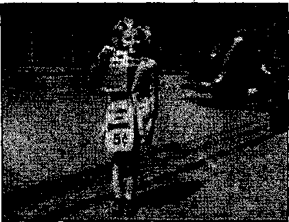
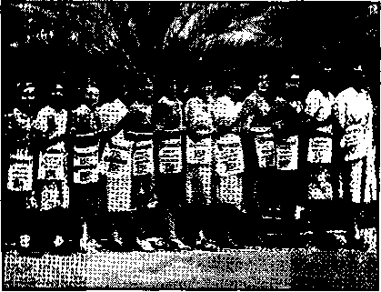
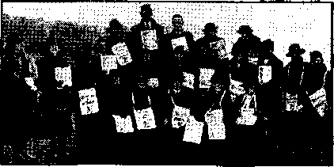

Contents
Unexplainable and Unnecessary Sounds
Under the Totalitarian Flag
Auto da Fe, or Act of the Faith
“Characters of the Inquisition”
Mr. Hays Could Not, Would Not and
“Give Us More Religion” (?)
“Enormous Prestige” of the Clergy
Counsel by J. F. Rutherford
Orphans Become King’s Children
“Patient and Peaceful” Diplomats
The New Government
Beautiful Row in North Carolina
Defending Liberty by Denying It
Oklahoma Zone Assembly in a Tent
New England—Police Must Obey Laws
The. Press—“Refused Further Information” 27 Mexico, Nicaragua and Bermuda
British Comment
Published every other Wednesday by
WATCHTOWER BIBLE AND TRACT SOCIETY, INC. 117 Adams St., Brooklyn. N. Y., U. S. A.
Editor ‘ Clayton J. Woodworth
Business Manager Nathan H. Knorr
Five Cents a Copy
JI a year in the United States
J1.25 to Canada and all other countries
NOTICE TO SUBSCRIBERS
Remittances: For your own safety, remit by postal or express money order. When coin or currency is lost In the ordinary mails, there is no redress. Remittances from countries other than those named below may be made to the Brooklyn office, but only by International postal money order.
Receipt of a new or renewal subscription will be acknowledged only when requested. Notice of Expiration is sent with the journal ono month before subscription expires. Please renow promptly to avoid loss of copies. Send change of address direct to us rather than to the post office. Your request should reach us nt least two weeks before the date of issue with which it is to take effect. Send your old as well as the new address. Copies will not be forwarded by the post office to your new address unless extra postage is provided by you.
Published also in Afrikaans, Bohemian, Danish. Dutch, Finnish. French. German. Greek, Hungarian, Japanese, Norwegian, Polish, Portuguese. Spanish. Swedish, Ukrainian; also special Australian edition in English.
OFFICES FOR OTHER COUNTRIES
England 34 Craven Terrace. London, W. 2
Canada 40 Irwin Avenue, Toronto 5, Ontario
Australia 7 Beresford Road, Strathfield. N.S.W. South Africa 623 Boston House, Cape Town
Entered as second-class matter at Brooklyn, N. Y., under the Act of March 3, 1879.
Notanda
A Scientific Description of Sound
♦ The source of a sound is usually an elastic body distorted from its normal shape and released, vibrating more or less symmetrically about this normal shape or position. The distance from a point in one impulse to the corresponding point in the next impulse is called the wave length of the sound. The frequency of these waves as they strike the ear determines the pitch of the sound.
Sound may be conveyed by any elastic substance. If produced in free air, at a distance from all obstacles, it spreads in spherical waves, diminishing as it spreads over greater and greater surfaces. In the air sound travels approximately 1,100 feet per second, but the velocity varies with the temperature and other circumstances.
Sound can be conveyed by any elastic substance. Place a watch on a table, smother it with a pillow so that its ticking cannot be heard, put the ear to the edge of the table and the ticking of the watch will be hoard coming through the wood, strong and dear. This principle is employed in a device by which the bones of the head convey the sounds. Electric vibrators, fastened to the forehead or other parts of the cranium, enable totally deaf persons to receive oral instruction, music or other sounds from the teacher, with whose loudspeaker they are connected by wire.
When a gun is fired five miles away at sea there are two reports. The first one comes through the water in about six seconds. Twenty seconds later comes the report transmitted through the air.
The noise in a vehicle is much less when it is loaded than when it is empty. This is because the bodies and clothing of the passengers absorb many of the sound waves.
Sound waves may be bent by passing them through large thin-walled spherical balloons. When the balloons are filled with heavy gas the sounds converge; when filled with lighter gas they diverge.
CONSOLATION
“And in His name shall the nations hope.”—Matthew 12:21, A.R.V.
Volume XXIII Brooklyn, N. Y., Wednesday, October 15, 1841 Number 575
Sound and the Human Ear
JEHOVAH GOD caused the walls of Jericho to fall down flat at the sound of a multitude of human voices, the voices of His then witnesses in the earth, His typical people in the days of Joshua. They were to give a shout alt at once and down would come the walls, and they did. The marching continued until the shout was to be given and was given.
That seems to be the situation today. Jehovah’s witnesses go about the earth with the witness by word of mouth, by sound-car, by phonograph, by radio (to some extent), as well as by books and magazines, and sound enters into it all (except in the case of those totally deaf), and may enter into it still more, in some manner as yet unforeseen. The great shout is yet to come, and is sure to come, whatever be its form, and, in any event, a consideration of the subject of sound, with some attention to the human ear, is quite in order.
The sounds which one hears coming from stringed instruments come, not from the strings, but from the sounding boards. It is infinitely more important to have a good violin than it is to have good strings on it. As violin strings cut through the air they communicate almost no motion to it and therefore emit practically no sound directly.
In the human throat, air from the lungs is blown over elastic vocal cords and their vibrations are communicated to the air after being projected against the roof of the mouth as a sounding board. Good singers have the roofs df their mouths highly arched.
OCTOBER 15, 1841
A curious but unintentional example of sound diversion occurred in the British House of Parliament when a shaft of warm air, rising through a large ventilator in the floor, so diverted the sound that a speaker on either side of it could not be heard by one sitting on the opposite side.
Reverberation comes when sound waves hit solid walls and rebound, sometimes echoing scores of times before they come to rest. Reverberation is corrected by coffering or deeply recessing plastered wails.
The air ripples set up by sound pass through the outer ear in man and beat against the eardrum, which covers and protects the middle ear. In the middle ear are three small bones, the hammer, the anvil, and the stirrup, the uses of which are to convey the sounds to the inner ear, the cochlea, the exquisite harp of 2,700 strings'which baffles the atheist.
Who was it that strung those little white threads, those tiny aerials which catch the flutterings of the ether across the oceans and convey them to the brain without a slip of so much as a syllable? Some call these threads nerves, but how they do their work without intervention of the ■will is unknown, except by the Creator. They do something else too. As the head is bent these tiny threads bend correspondingly and send out warnings all over the body to stiffen this muscle or relax that one so that the proper balance of the creature may be preserved. It is a bigger trick keeping one’s balance
3
than one thinks it is: it is an exceedingly difficult matter to stand perfectly still in one position for even one minute. This part of the brain is so important that when a person'is hit on the chin and the jawbone is forced back into the cavity where these little threads are found, the person hit goes down unconscious. ■
A human whisper can be heard about 15 feet, and an ordinary voice 30 feet. The Solomon Islanders are said to hear drums 100 miles away.
Man has heard volcanic explosions at 2,000 miles. He can hear artillery firing at 150 miles, a railway whistle at two miles, and the noise of a train at 8,200 feet. A balloonist has heard the report of a rifle and the bark of a dog at 5,900 feet, the beating of a drum at 4,550 feet, the rolling of a cart at 3,255 feet, the croak of frogs at 3,000 feet, the note of a cricket at 2,500 feet, and the voice of man at 1,600 feet. The cry of a babe has the greatest carrying power of any human articulation. This is to make sure that its wants will receive attention.
The trained ear can distinguish sounds as low as sixteen vibrations per second, and up to as high, in rare instances, as 70,000 vibrations per second. Young people can hear sounds of higher pitch than older people. ;
Bats are guided in their flight at night by. echoes that come back to them from shrill notes which they send out from little noise-making centers in their wings. These noises are so shrill that they cannot be heard at all by human ears.
The air is full of sounds that man cannot hear, but they mean life or death to the insects and to the birds and other creatures that make their living by secondary methods. Watch the ears of cats and dogs and see how responsive they are to sounds you cannot detect.
Everybody remembers the story of fthe holy ge^se in the holy temple of the holy city and how the holy Homan soldiers were awakened by them when the wicked heathen Goths tried to climb up into the Capitoline Hill one stormy night. The holy geese saved the holy city by squawking at the right time. Thus the holy fires in the holy temple did not go out, but continued'to smoke, holy smoke.’
Reptiles have ears, fishes have ears, worms have ears, and whales have ears. The dip of an oar is enough to send a whale out of sight beneath the waves. In the effort to accommodate himself to the rising din about him which is making him partly deaf, it is said, man’s ears are getting larger and larger.
By means of mechanical ears, which transform inaudible sounds into audible ones, or into visible signals, man is able to hear or see the roar of a magnet as it picks up a piece of iron, or the shrill sounds of inaudible foghorns set to guide ships into port in a fog.
A mechanical ear attached to the outside of a dwelling enables a detective to hear the conversation carried on within, or to detect a gun fired 135 miles away. It is hoped that man may yet set up silent sounds that will destroy or entrap insects and other pests.
Man can sense some of the low sounds which he cannot hear when the floor beneath him in a church trembles from the deepest notes of the organ, pitched so low that while his body can feel the vibrations, his ears cannot hear them at all, though a trained ear may be able to do so.
When the Britishers hear about American helis and locomotive whistles and the unending racket which they make from one end of the land to the other, day and night for ever and ever, they smile incredulously.
Over there they have no grade crossings. Incidentally, that one little item saves them 5,000 funerals a year.
It is thought that if all locomotive and traction whistles were of one pitch, and nothing else could use it, the ear would soon become accustomed to instinctively associating it with danger, -
CONSOLATION
Western lines are experimenting with musical locomotive whistles, soft, cooing, in place of the screech-owl type generally used. Sirens audible at three miles are used on the Southern Pacific lines in California. The direct annual cost, in coal and water, of operating railroad whistles is figured at eight million dollars for the United States alone.
A siren is a very simple foi'm of whistle. It consists of two circular dises, the one fixed, the other pivoted to revolve nearly in contact with it. Both discs are pierced by a circle or circles of holes through which steam or compressed air escapes as the holes in the two discs come opposite one another,
Sound is much affected by atmospheric conditions, topography and buildings, so that a blast from a single whistle cannot always be heard for any great distance in a specified direction. Some have expressed the belief that the locomotive whistle, like the headlight, should be reflected forward, to confine the sound, as far as possible, to the region ahead.
Mysterious noises in the sky have been heard within the past few years in various parts of the earth, notably in Georgia, North Carolina, Pennsylvania, the Mississippi valley, and Honduras; also over London. Though the skies were clear, these explosions were so severe as to shake the houses. At last reports the scientists grappling with this problem had not been able to suggest any reasonable theory to account for them.
There are some odd radio receptions, hard for any but experts to understand. In a Toronto florist shop the metal sink acts as a loudspeaker and when the radio transmitter is on the faucets in the flower store yield as nice music as one could wish. There was a similar case in London, where crowds gathered around a metal lamp pole near Station 2LO to hear the latest news without the trouble or expense of tuning in.
In various places in the earth street
OCTOBER 15, 1941 criers rend the air with cries that seem to accomplish little except to lacerate the nerves of all in the neighborhood. Such cries were much more common once than now. Hand-organs and street bands are largely things of the past.
A speaker who shouts hurts his own voice and hurts the ears of those he addresses. Speaking with clear, careful articulation, not too loud nor too low, gives best results all round. Slovenly or billowy speakers are a bore.
Riveting machines are passing out. One man with an electric welder can do what four men did with the riveter, and do it quietly, and do it better. Barking dogs are a nuisance in a city and a menace anywhere. City dwellers, with their nerves torn by the racket, do not find the same delight in being awakened by crowing roosters as do some others.
Of all noises in the city and out of it, the one that seems to be the greatest 'general nuisance is the unrefined, coarse, blatant, discourteous squawk from the automobile. It speaks for itself. That it accomplishes its purpose of giving sud-\ den alarm is not to be questioned, but there are some kinds of horns that are less beastly than others.
The tooting of an auto horn in front of a house is illegal and indefensible, if its object is to arouse the inhabitants of the house. There are other and better ways to accomplish that end. Yet it is often done by those (and they are many) who never think of anybody but themselves. Why anybody should awaken a whole neighborhood because he wishes to speak to one person who can be awakened otherwise is a mystery. Also, how about the noisy ringing of church bells early on Sunday morning?
A study of the noise of New York city charges forty percent of it to auto trucks, twenty-five percent to the elevated railway, twenty percent to surface ears of the street railway, and the remainder to automobiles, taxicabs, fire apparatus, horsedrawn vehicles, and excavating and building operations.
The little machine for measuring the volume of noise in a given vicinity is called the audiometer. By means of this instrument it has been discovered that at the brink of the Canadian Horseshoe Falls of Niagara there is no greater volume of noise than is sometimes equaled at New York’s busiest corner.
Oddly enough, the noise map of New York shows that the quietest place in the city is in a subway station when all trains are far enough away to send back no roar. As a rule, the noise map of the city is almost identical with its traffic map, but not quite.
Cottagers near bodies of water complain of unnecessary noises by motor boats. Britain estimates its cost in fatigue due to jazz bands as not far from one million pounds a week. As one long-suffering Briton put it, he wishes they would take the din out of dinner and restore the rest to restaurant. There is* some agitation in Britain for a public health noise abatement act.
In America one person in six has defective hearing. Children of cousins are special sufferers in this regard. The hard-of-hearing children have to repeat their grades three times as often as do children from all other causes.
The natural rhythmic action of the stomach is found to be halted one-third by any harsh noise, and instruments show that when a paper bag is burst near the ear of a subject the pressure in his brain rises to four times normal.
Why should some sounds disturb one, and other sounds which to others seem worse have no effect on him ? Here enters the human nervous system; and strange are its -ways. Here is Helmholtz’s explanation of why a discordant note offends the ear:
The essence of dissonance consists merely in very rapid beats or changes in intensity of the sound. Two consonant tones flow on quietly side by side in an undisturbed stream; dis-
6
sonant tones cut each other up into separate pulses. These pulses may be too rapid for the ear to separate, but their existence may be demonstrated. The nerves of hearing feel these rapid beats as rough and unpleasant because every intermittent excitement of any nervous apparatus affects us more powerfully than one that lasts unaltered.
It is the odd way that this works out in everyday life that is interesting. The Syrians and many others enjoy music that is full of half and quarter tones that are painful to the ears of others; but having become accustomed to it, they like it. Jazz is in the same class.
New York had the odd example of two riveters perched in the iron work of a towering building, pleading with a lady who was practicing scales in a studio opposite their rattling machine guns. They begged her to stop her racket, as it upset their nerves. It is well known that the city dweller is as much upset by the odd sounds of the country as his country cousin is by the racket of the city when he comes to town.
A stationary engineer works for hours on end in a deafening roar, but let an unusual sound come-from the engine, a bit of grinding or scraping, he hears it instantly and is alert to locate the trouble. It is not so much the noise as the unusual noise that distresses.
Many people sing when in the bathroom. The reason is that the note is struck for them by the running water. The reason why noise in some offices is so distracting is that the noises are unusual. The click of the typewriter does not disturb. One gets used to that; but conversation, singing, whistling, the ringing of the telephone! 11
Exposure to sound above a certain intensity causes deafness. A single loud blast may do it, or a relatively low intensity long continued will produce the same result. Hearing continues while asleep. Digestive poisons work to produce deafness. A White Plains woman
consolation
had extracted from her ear the skeleton of a cricket that flew into it fifteen years previous. A Massachusetts man had his eardrum punctured by a twig that slapped him and broke off while he was in the woods. Many aviators are deaf, and it is small wonder. Water in the ear is a contributory cause. A child “specialist” in a California city makes a specialty of puncturing infants' eardrums for the money there is in it. He deserves condign punishment for such a crime. He puts an optical instrument into a perfectly normal ear, and then gets a distracted mother to look through it and see for herself 'how imperative the “operation” isJ. There are other rackets than the religious humbug.
The first American school for the hard of hearing was at Hartford, Connecticut, in 1817. In New York city’s School for the Deaf 440 children are being trained to speak and follow the same course of study as other boys and girls. They learn to read lips, which is a fine art. The elementary sounds are taught by means of mirrors, which help the children to make the same motions as normal persons make in producing sounds. Some admitted as entirely deaf are later found to have some rudiments of hearing.
Stunt flying in airplanes as a means of gaining the use of the organs of hearing passed out after several precious lives were lost ’ and little good accomplished by that means. Gunners try to save their hearing by opening their mouths while firing large guns, thus equalizing the pressure on both sides of the eardrums. Edison was made stonedeaf by having his ears boxed. A supposedly playful box on the ear burst the eardrum of one ear of the writer of this article. Some people think their brains were only stuffed in to fill out the cavity in their skulls.
The only quiet places in New York are in the interior of blocks and in the tops of skyscrapers. Street noises hit Hie
OCTOBER 15, 1941 walls of the buildings and ascend ip heavy volume ten floors, after which they gradually die out until, when the twentieth floor is reached, they are well dissipated. Vessels in the harbor are a greater annoyance on the top floors than lower down. Unnecessary noises .from tugboats and other harbor vessels have been much reduced in New York in recent years, as a result of determined efforts to that end.
It has long been recognized that quiet should reign in hospitals and in their surroundings. The sick do better where it is quiet. So do the well. Removal from a noisy place to a quiet one is as good as a vacation. Silence soothes the bruised nerves of the ears.
London is as quiet as a graveyard, compared wuth New York. There are few autos, and they travel quietly. Even the children seem quiet about their games. Yet the Londoners are beginning to complain of the noise of a noisy age.
In Paris a nervous play-writer, M. Bernstein, had an architect design a supposedly soundproof room; but in spite of padded walls, two feet thick and stuffed with sawdust, he found that his sensitive ears picked up as much noise as ever. He gave up the fight and went to a hotel.
Herbert Spencer valued silence so much that rather than waste his time listening to a conversation ■which he saw was becoming unprofitable he w’ore earmuffs, which he impolitely drew down when he began to suffer. These ear-muffs contained small wax cones with which he closed the portals of his ears.
Grenville Kleiser, writing on the value of silence, says:
Great is the power of silence. There is nothing more eloquent than the still small voice of conscience. Think of the silent growth of the forest. The world upon ’which you now stand is whirling silently through space. The great forces of nature are silent. How wonderful is the silent power of truth, constantly at work, without effort, sound or confusion, Only man is wasteful, prodigally squandering' words, speech and energy. Silence will help you to solve personal problems. Silence is golden. Silence will give you rest from inordinate ambition and desire. Silence will promote quietness of spirit. Words are squandered in useless daily talk. The loss of time and energy from this source alone is incalculable. Add to this the incessant noise, alike in the country and cities, and the need of some counteracting influence is obvious.
Super-sounds have been produced up to 300,000 vibrations per second. This was done by what is called a “piezoelectric oscillator”. At this rate these sound waves do not register in the air. Frogs and fish died within a few minutes when the waves passed through the waters in which they swam. One-celled organisms, called paramecium, broke in pieces.
By means of the hydrophone, much used during the World War, any water sound may be magnified any number of times desired. The addition of each vacuum valve after the first squares the volume of sound. With one valve the sound is magnified seven times, with two valves forty-nine times, and so on. The footsteps of a fly may be made to sound like the roar of heavy artillery. The geophone does for land sounds what the hydrophone does for water sounds. A perfect receiving apparatus could receive every sound ifi the world.
A loudspeaker device uses a new series of sound waves. They travel at twice the speed of ordinary sound waves and are • capable of hurling the human voice many miles. Who would want to live in a world where titantic bellowers could project their words in tones stupendous? Even Spencer’s ear-muffs hold out no hope.
The “exponential horn”, so called, is a new invention that broadcasts the natural human voice or tones of musical instruments without distortion. It is claimed to function perfectly at a mile. The secret of the volume of the horn lies in a mathematically-preeise enlargement of the tone chamber, which is four feet square.
The Topeler method of sound photography has been greatly improved upon recently by the discovery that sound waves produced between a point source and a photographic plate cast shadows on that plate. The twinkling of stars and the phenomenon of heat rising from the ground, both caused by varying density of the air, are keys to the new method.
By the Osiso, which transforms sound into a pencil-point of light, the totally deaf may understand speech by viewing the audio-frequency waves of the output of any good radio receiving set or telephone. The receiving is done on a series of revolving mirrors.
By a German invention, patented by the firm of Mertens, books and papers printed in a certain kind of ink may be heard by the blind, but the form intended to be used is a series of dots and dashes printed on a tape. It is necessary that the blind person be familiar with telegraphy.
It is admitted that athletes have the best hearing of any humans; so, if you wish to hear well, keep your entire body in as sound health as possible. Children whose parents are cousins should be taught to lie on the face, to help keep the Eustachian tube open and reduce the chances of deafness.
A totally deaf person states that he gets some fun out of his predicament. Once he was arrested for not reading correctly the lips of an officer who had warned him he was violating a traffic ordinance and who wanted to know brusquely if he thought he could get away with that. When he nodded affirmatively the cop, not having any sense [and it is wonderful how many such there are] ran him in. The totally deaf, when visiting with each other, by the lip-r6ading system make noises that scare the unsophisticated; but they themselves do not know of it.
In the Days of The King there will not be a deaf ear in all the earth.
Auto da Fc. or Act of the Faith
♦ “Act of the faith” (auto da fe) in the Romish church is a solemn ceremony held by the inquisition for the punishment of heretics and the absolution of the innocent accused. They usually contrive the auto, to fall on some great festival, that the execution may pass with the more awe, and it is always on a Sunday. The auto dafe may-be called the last act of the inquisitorial tragedy: it is a kind of jaildelivery, appointed as often as a competent number of prisoners in the inquisition are convicted of heresy, either by their own voluntary or extorted confession, or on the evidence of certain witnesses. The process is this: In the morning they are brought into the great hall, where they have a peculiar habit put on, which they are to wear in the procession, and by which they know their doom. The procession is led by the Dominican friars, after which come the patients, being all in black coats without sleeves, and barefooted, with a wax candle in their hands. These are followed by the penitents who have narrowly escaped being burnt, who over their black coats have flames painted, with their points turned downwards. Next come the negative or relapsed, who are to be burnt, having flames painted on their habits, pointing upwards. After these coine such as profess doctrines contrary to the faith of Rome, who, besides having flames painted upwards, have their picture painted on their breasts, with dogs, serpents, and devils, all open-mouthed, about it. Each prisoner is attended with a familiar of the inquisition, and those to be burnt have also a Jesuit on each hand, who is continually exhorting them to abjure. After the prisoners
OCTOBER 15, 1941 comes a troop of familiars on horseback; and after them the inquisitors, and other officers of the court, on mules; last of all the inquisitor-general, on a white horse, led by two men.
A scaffold is erected, large enough for two or three thousand people; at one end of which are the prisoners, at the other the inquisitors. After a sermon, made up of encomiums of the inquisition, and invectives against heretics, a priest ascends a desk near the scaffold, and having taken the abjuration of the penitents, recites the final sentence of those who are to be put to death, and delivers them to the secular arm, earnestly beseeching, at the same time, the secular power not to touch their blood, or put their lives in danger. The prisoners, being thus in the hands of the civil magistrate, are presently loaded with chains, and carried first to the secular jail, and from thence, in an hour or two, brought before the civil judge; who, after asking in what religion they intend to die, pronounces sentence on such as declare they die in the communion of the church of Rome, that they shall first be strangled, and then burnt to ashes; or such as die in any other faith, that they be burnt alive. Both are immediately carried to the Ribera, the place of execution, where there are as many stakes set up as there are prisoners to be burnt, with a quantity of dry furze about them. The stakes of the professed, that is, such as persist in their heresy, are about four yards high, having a small board toward the top for the prisoner to be seated on. The negative or relapsed being first strangled and burnt, the professed mount their stakes by a ladder, and the Jesuits, after several repeated exhortations to be reconciled to the church, part with them, telling them that they leave them to the devil, who is standing at their elbow to receive their souls, and carry them to the flames of hell. On this a great shout is raised, and the cry is, “Let the dog’s beards be made,” which is done by thrusting flaming furze, fastened to long poles, against their
9 faces, till their faces are burnt to a coal, which is accompanied with the loudest acclamations of joy. At last, fire is set to the furze at the bottom of them, over which the professed are chained so high that the top of the flame seldom reaches higher than the seat they sit on; so that they are rather roasted than burnt. There cannot be a more lamentable spectacle. The sufferers continually cry out while they are able, “Pity, for the love of God!” Yet it is beheld by all sexes and ages with transports of joy and satisfaction,—Buck’s Theological Dictionary.
“Characters of the Inquisition”
♦ The American Freeman, June, 1941, reviews the foregoing book by the Catholic author, Wm. Thomas Walsh. The editor of the Freeman is a Socialist, accustomed to using his brains, and though he may not yet see, as do the readers of this magazine, the imminent and final destruction of the Catholic Church and literally every single person then a member of that church, and of all the other churches that have blasphemed God’s holy name, yet he does see much of the vicious depravity of the old "harlot” whose works Mr. Walsh glorifies. But let the editor of the Freeman tell his own story;
Walsh actually defends the methods of torture used by the Inquisition, claiming they were “humanitarian acts”. For example, Tor-quemada, who introduced the "reo”, or “water cure”, had in his saintly mind the sacred wish "to temper the application of torture with mercy”. Walsh then describes the “water cure” in order to prove how merciful it was. Here are the Catholic author’s own words, in a book issued in 1941:
“If he (the victim) refused to clarify the contradictions in his testimony, or was strongly suspected of withholding important information, he was stretched naked and tied with eords upon a very forbidding looking escalera, or ladder. His nostrils were stopped, his jaws held apart by an iron prong, and a piece of linen placed loosely over his mouth. Into this cloth water was slowly poured, carrying it, into the throat. This gave him the fear, and some of the sensations of suffocation, without allowing him to suffocate. If he squirmed, the eords hurt his wrists and ankles. If he proved very stubborn, one of the familiares might give him an extra twist or two. This must have been a very painful and harrowing experience. Yet it seldom did lasting harm, and it often obtained confessions.” Let’s not forget that the people who resorted to the above act* are presented to the world as the sole preservers of virtue and godliness, the people who have a decree from God Himself giving them authority to save the souls and purify the lives of the human race. If the above form of torture was “merciful”, try to imagine what the rougher devices embraced. It’s terrible to reflect that the Black International has never surrendered its right to invoke such forms of torture when circumstances permit the Church to resume its old, perhaps only temporarily lost, temporal power. Hitler’s Gestapo has already re-established the worst features of the Inquisition; its horrors are being perpetrated as you read these words. Reaction is in the saddle and doing terrible things to human beings. And the religious mentality that organized and conducted the Inquisition, at the cost of millions of lives, is with us today, writing in its defense, and urging the institution’s return. If America were to become a Catholic country the Inquisition would be set up. The leaders of the Church frankly say so. Why should we refuse to believe their candid words?
The Theory and the Record
♦ The “five points” upon which Pius XII would base a peace are:
1. Guarantee for all nations, large or small, powerful or weak, of their own right to life and independence, and recognition of the right to reparations for evils suffered in the war according to the rules of justice and reciprocal equity;
2. The necessity of halting the armament race and of avoiding the danger of the material force becoming tyrannical;
3. International, not unilateral, reorganization, with juridical institutions guaranteeing the faithful fulfillment of peace pacts;
4. Recognition of the just rights of minorities :
5. The pacts which the people agree upon validated and animated by morality and by religion.
These words remind one of the message addressed by the pope to the Peace Congress in 1899. Commenting on this message an eminent hut unnamed Roman Catholic representative of a Roman Catholic power is credited in Autobiography of [Ambassador] Andrew I). White as having said (and the words bear the stamp of the truth):
The Vatican has always been, and is today, a storm-center'. The pope and his advisers have never hesitated to urge on war, no matter how bloody, when the slightest of their ordinary worldly purposes could be served by it. The great religious wars of Europe were entirely stirred up and egged on by them; and, as everybody knows, the pope did everything to prevent the signing of the treaty of Munster, even going so far as to declare the oaths taken by the plenipotentiaries at that congress of no effect. ...
They pretend to be anxious to “save souls,” and especially to love Poland and Ireland; but they have for years used those countries as mere pawns in their game with Russia and Great Britain, and would sell every Catholic soul they contain to the Greek and English Churches if they should thereby secure the active aid of these two governments against Italy. They have obliged the Italian youth to choose between patriotism and Christianity, and the result is that the best of these have become atheists. Their whole policy is based on stirring up hatred and promoting conflicts from which they hope to draw worldly advantage. ■
Lafayette said:
It is my opinion that if the liberties of this country—the United States of America—are destroyed, it will be by the subtlety of the Roman Catholic Jesuit priests; for they arc the most crafty, dangerous enemies to civil and religious liberty. They have instigated most of the wars of Europe.
And it is this gang that accuses Jehovah's witnesses of stirring up hate.
OCTOBER 15, 1941
The Pope’s Great Big Flock
♦ The Lord Jesus said, “Fear not, little flock; for it is your Father’s good pleasure to give you the kingdom.” The Roman Catholic Hierarchy, aiming .to have everything as different as possible, rejoice in their great big flock, a larger percentage of whom are behind bars than of any other denomination. The Hierarchy advertises that in the United States, Alaska and Hawaii it has 22,293,101 communicants, 35,839 priests, and 152,159 sisters and nuns. That is almost five nuns to a priest. The whole family was invited to the St. Paul Eucharistic Congress in June.
A possible explanation of how it is that the self-advertised “Glacier Priest”, the Jesuit “Reverend” Bernard R. Hubbard, of Santa Clara University, California, came into possession of military and naval information that no civilian should have is that his brother, Captain John Hubbard, is a retired officer of the United States Army now living at Chico, California. Of course, Hubbard wants to sell his dogs, which accounts for much of the free newspaper advertising he has received. The latest story from Santa Clara, California, contained a free advertisement of about 150 words as to why the Hubbard dogs should be purchased by the United States Army.
You should be interested to know that on April 27, 1941, the pope “blessed” the Jesuits on the 400th anniversary of the founding of that society which at various times, because of its corrupt principles and practices, has been banned repeatedly from most countries of Europe.
The Catholic Universe Bulletin reports the archbishop of San Antonio as complaining that America has given (the Catholic) religion a secondary place in American life and that “too many of our citizens give only lip service to the principles upon which our nation was founded”. This is just to tell Archbishop Lucey that America was not founded on the Catholic religion, and, as a matter of fact, they had nothing to do with it.
The Hierarchy i s anxious beyond words to seize control of America; so they have a batch of 113 candidates for beatification so that America will have fresh lots of “saints” coming up on the dumb-waiter continually. They will be minus their hair and whiskers, which do not stand the heat of “purgatory” well.
The London Catholic Herald rejoices in the fact that three priests helped at the third inauguration of President Roosevelt, Mr. Corrigan, Mr. Ready and Mr. Cartwright.
The Flanagan racket in Nebraska is being worked to a finish. The people have seen and heard so much that they have sickened of it. People are unwilling to pay their good money for movie entertainment and then be compelled to gaze upon a lot of strutting priests. Wherever the movie “Men of Boys Town” has gone, thousands of letters from Flanagan have followed, asking for a handout. And thousands of letters have gone to Hollywood protesting against the obvious Roman Catholic propaganda being stuffed down people’s necks as “entertainment”.
Boys Town, Nebraska, was so widely advertised that Patrick J. Norton, manager of the town, was invited to take charge of California’s notorious' Whittier State School for Boys. Between fifty and sixty boys escaped from the school a few minutes after Flanagan addressed them. This institution is famous for its strappings, black eyes and suicides.
Eugene’s Beautiful Straddle
♦ Herbert L. Matthews, commenting in the New York Times on one of the pope’s somniferous regurgitations, says:
No doubt much ink will be spilled on both sides to show that the Pontiff was anti-Fascist or pro-Fascist, but a preliminary study of this Pentecost message, made both in and out of the Vatican, agrees that the balance has been kept pretty finely. Some shrewd blows are dealt at the Fascist conception of life, but there are other passages that appear to support Fascist theses. The Pope seems to envisage the new order as a compromise that would satisfy certain Fascist aspirations but, above all, preserve the freedom of the individual.
Mr. Matthews had the courage to tell the truth, but the editor that wrote up his story, in the same paper, and on the same day, straddled the straddle crosswise just like this: “The Pope speaks in general terms, but his condemnation of the social and economic tenets of totalitarianism, whether Communist or Nazi, is unmistakable.” In other words, nobody could make head or tail of the junk, but it was up to the editor, if he wanted to eat regularly, to come across with some baloney that would give the pope a good break in the eyes of the great American sucker. The solemn title of the editorial was “The Pope Speaks”. Any other verb would have done just as well.
“Fifth Column” Work in Santiago
♦ The Diario de Cuba (Cuban daily), Santiago, April 18, contains details of the arrest, imprisonment and release of “Reverend Father” Joseph Moran Pan, a Spanish Catholic priest, residing at a church, and in whose room were found several pictures of the fortress for which Santiago is famous; also other pictures of the priest himself, in a trench in Spain, and in the uniform of a Phalan-gist (Fascist). The cause of his arrest was that he was devoting himself to espionage activities. Witnesses found in his room a plan of the city of Havana, with specilications of the military airdrome and some important factories. It is not considered feasible in Cuba, which is a Catholic country, to hold a priest in prison for crimes against the country.
The Bright Red Song Book
♦ The Army and Navy are printing a new song book with bright red covers, which ought to be good. Protestant, Cath-• olic and Jewish hymns are mixed together in the one book, which winds up with a “hymn’ “Good Night, Ladies.”
• (To be continue^)
Mr. Hays Could Not, Would Not and Did Not Answer This Letter
July 25, 1941 Mr. Will H. Hays, President, Motion Picture Producers
and Distributors of America, Hollywood, Calif.
Dear Sir:
I have before me a copy of the New York Times of July 21 which quotes you as saying:
"The motion picture screen has no room for propaganda. . . . The great function of the entertainment screen is to entertain. , . . There are those who would use the films to bemuse, rather than amuse, the American public. The screen has no room for such propaganda.” ■ .
Apparently your condemnation of propaganda is general, and I am entirely in accord with such attitude. I wish to ask, however, if you mean to include in this sweeping condemnation the use of the screen to eulogize one particular church system? Ever since the Catholic Legion of Decency, once headed by Mr. Breen, has constituted itself the censor board for all films, there has been a great loss in their entertainment value which may be laid to the introduction of Roman Catholic Church scenes which the plots did not call for. Are not such scenes intended to influence Catholics and nonCatholics to think more highly of the Roman Catholic Church? In view of the bad record of the organization thus projected on the screen and their backing of the Axis powers, is not the introduction of Catholic priests in virtuous roles misleading, and hence a subtle form of propaganda ?
May I ask again: Do you intend to prohibit the use of the screen as a vehicle for Roman Catholic Church advertisement? '
It cannot be offered as excuse that Hollywood has become imbued with religious zeal for all religions. There is no OCTOBER 15, 1941 praise in picture of Protestant or Jewish faiths, and quite a number are ridiculed, such as the Mormons and Baptists. But not the slightest criticism is permitted to fall on the agents of Vatican City.
Just how are the rites and customs of the Roman Church “entertaining”? Not even their curious garb customarily adopted, nor their beskirted antics, can be considered "amusing” when it is remembered that such costume and pretended piety have been used for centuries to hide iniquitous deeds. Now this same politico-religious system is supporting Hitler, called “The Crusader” by Catholic bishops throughout the world; who is in truth the modern Inquisitor General who has left butchery and desolation in his wake.
Because of the censorship adopted by the American press with regard to all Papal activities you may not have the facts on the tie-up between Hitler and the pope. I assume that you would like to know if this is true. If you do I suggest that you read any of the following books: Van Paassen’s Days of Our Years; E. Boyd Barrett’s Rome Stoops to Conquer; George Seldes’ Catholic Crisis; Religion, by Judge J. F. Rutherford (Watch Tower, Brooklyn); or any issue of The Converted Catholic, 229 W. 48th, N.Y.C.; or of Consolation. Several English and Canadian publications cover the same matter. H. G. Wells, dean and famous English writer, will vouch for the truth of the assertions contained in this letter.
Or, because of your position, you might find it convenient to have a private talk with ex-Ambassadors Kennedy and Cudahy, who have intimated as much and are putting their chips on the Cath-olic-Nazis to win.
Criminals who are never uncovered even at the end of the picture mislead public opinion. When the Hierarchy is eulogized in glorified roles this is propaganda of the worst sort. The question now is: Did you really mean what you said, and intend to eliminate propaganda? Or did you simply mean that you intend to eliminate propaganda that you don’t like ? Much of the popularity of the cinema depends on the course which you take in this matter.
Perhaps you already know the truth of the above charge. If you do and have determined to assist the Roman Catholic Hierarchy, just throw this letter away; and only remember it at the time the Lord of Hosts has a final reckoning with wickedness both of the Hierarchy and of all her allies.—Psalm 9:17.
Yours for righteousness and against hypocrisy, Elton Groves.
“Give Us More
A Friend in Chile, S. A., Inquires:
Has Judge Rutherford forgotten the incident of the Booth family and the £1,000,000 they grabbed and ran off with when a mutiny in the ranks of the “army” dethroned them, and which they were ordered to return by a British tribunal? Only £1,000,000. Every penny of it subscribed by people who thought they were giving it for the uplifting of the outcast and the fallen!
Has Judge Rutherford ever realized that “General” Booth (the founder of the racket) was a liar even as he lay dead in his coffin? My reasons for saying so ? Here they are.
When the “army” had grown beyond his own wildest dreams and became' a rich vein of pure gold, he conceived the smart idea of handing the management down along the Booth family from father to son like some dynasty. Well, do you see what this means? No? All right, here goes again: (1) The words “Booth” and “Salvation Army” now get one and the same meaning. (2) Money can then figure in bank accounts and investment documents in the name of the “Salvation Army” but be manipulated by Booth and only Booth. (3) Booth was thus able to pose as a poor man living on the interest of £2,000 left him in a will by an old woman he had buffaloed. (4) In order to insure the immediate succession of his son to the hoarded wealth of the racket, he had only to grant this son power of attorney and name him as his successor as head of the “army”. (5) This did away with the necessity of making a will, as “my dear son” had only to step in and take charge. It also did away with the necessity of paying death
Religion” (?)
duties—a thing that exasperates all millionaires when they know the end is approaching. (6) It enabled him to make everybody think that he was what he claimed to be—a benefactor of the poor. Even the Times—that sober, staid old monument of conservative journalism—was fooled, and published 'a touching leader on the “General’s” life, saying, among other things, that his will (in which he left intact the £2,000 he got from the old woman to somebody else) was a conclusive answer to his critics.
That the money was completely in the hands of the Booths is proved by the fact that they were able to collect a million pounds without any question at the banks and walk off with * it. Had I been the “General” who succeeded the Booths, I would have been tempted to let that million go rather than face the publicity of the British courts in claiming it. But'subsequent facts show that he had a better card than that to play. He gambled on the short memory of the public and won his bet, because now we never even hear a word about the matter, and I doubt if one man in a thousand even remembers it.
One fellow I once spoke to, a warm admirer of the “army”, got hot at me one day. “What do you mean?” he said. “Look at the thousands of meals and free beds the ‘army’ gives away every year.” “I’m looking at them,” I replied. “But I have also audited the accounts of fraudulent institutions, and it was just surprising the number of really legitimate operations I found in their businesses. Legitimate operations, you know, are the greatest essential in every fraudulent concern.
They want them to point at. Without them the real business of fraud would become at once visible/’ '
Yes, the "army” really does give away bum meals and verminous beds and publishes them well. The figures, by the way, are not audited. And, curiously enough, they omit to publish the amount they wring from the public with heart-breaking tales of the sufferings of the poor. All together it is a case worthy of Judge Rutherford’s pen, and I will look with interest to see if he will ever have anything to say about it.
“Enormous Prestige” of the Clergy
♦ When the clergy say that the world needs God, they mean the world needs them, and there are those not of the clergy who have the same exalted idea of them. James H. R. Cromwell, prince consort of the Duke tobacco millions, and famous for bungling his job as minister to Canada, was subsequently bullion candidate for United States Senator from New Hague, once called New Jersey. This is the state where it is legal to vote the dead by the hundreds, but it is illegal to teach your children the Second Commandment of Almighty God. Well, in an address at Bethany College, West Virginia, Mr, Cromwell said: "The time has come for the clergy of all denominations, with their enormous prestige and courage, to save the nation from the dangers, both internal and external, that threaten to overwhelm it.”
The clergy of all denominations have enormous courage in lying about Almighty God and persecuting Jehovah’s witnesses, but otherwise are in the same class with the man who, seeing a bear coming toward his cabin, handed his wife an axe, shoved her outside, and hade her go to it with the bear. He stayed inside until she finished the bear. None of the clergy believe that Jesus told the truth when He said that the dead are in their graves (John 5:28), nor do they dare debate the things they are supposed to believe with anybody who really accepts the Bible as the Word of God as did the
OCTOBER 15, 1M1
Savior of men. In the eyes of the average intelligent man the "enormous prestige and courage” of the clergy is that of the dung beetle whose only interest is to feed while he can on whatever may drop in his vicinity from those that live on a higher plane of mentality and activity. Neither the Roman Catholic Hierarchy nor the Federal Council of Churches dares to publicly debate its doctrines with Judge Rutherford.
Eloquence from Paintsville
♦ A correspondent in Paintsville, Kentucky, sent a copy of the Paintsville Herald containing at the top of the front page a six-column heading reading "Go to Church During February—Any Church—but 'Go to Church’—Each Sunday They Welcome You”. In a box at the right is the statement that “churches and religious worship are the backbone of a nation”. Italy is a sample, for instance. Then the paper gives twenty reasons for attending church, and said correspondent modifies the reasons by suggestions in ,brackets. Here are some of the reasons and their brackets: (1) The best people go (to see and be seen). (2) The best Book on earth is read there (very little). (5) Our sorrows are explained there (and no remedy given). (6) Our (false) hopes are brightened there. Other comments are equally pointed. On this matter of being made welcome the correspondent says "There’s a heart full of welcome for you (and more so if you hit the collection plate hard each time you go)”.
Starting a Generation Too Late
♦ Imitating the Catholics the Protestant churches of Queens, in Greater New York, have organized a movement called “Protestant Action”. In the first place, this, group could never be taught to do and would not be willing to do the things of which Catholic Action is guilty, and, in the second place, the real work these Protestant churches should be doing has been done for a generation by Jehovah’s witnesses and is now about all done.
15
Orphans Become King’s Children WAR multiplies the many orphans.
Literally th (‘re are many orphans and widows in the land who are in mourning and distress because of the loss of loved ones in death. Arc these the “orphans” or “fatherless” ones that become children of the King of the Righteous Government 1
A child separated from his father is subjected to reproach by others. The fatherless need a vindicator and protector. Almighty God Jehovah makes it His purpose to be such to those “orphans” of good-will toward Him and Tlis righteous rule. Tt is written: “Tie doth execute the judgment of the fatherless and widow, and loveth the stranger, in giving him food and raiment.” (Deuteronomy 10: 18) The rulers of this world see God’s people feeing crushed, reproached and discredited, but lend no aid and comfort to them. Addressing them, at Psalm 82:3,4, Jehovah God says: “Defend the poor, and fatherless; do justice to the afflicted and needy. Deliver the poor and needy; rid them out of the hand of the wicked.” But the rulers fail and refuse to do so, and Jehovah then takes over the task; and concerning it His prophet says: “The Lord preserveth the strangers; he relieveth the fatherless and widow; but the way of the wicked he turneth upside down.”—Psalm 146: 9.
By His prophet (Malachi 3:5) the Lord God says that Jie is against them “that oppress . . . the widow, and the fatherless”. There are many persons now on earth who are of good-will toxvard Jehovah God, the Giver of life, and toward TTis King, Christ Jesus, by whom He grants life. Not having heard the truth of God’s Word, and not having had opportunity to embrace it and take their stand on the side of Jehovah and Christ Jesus, the King of The Theocratic Government, such persons of good-will are truly “fatherless”.
In sacred Scripture a woman is symbolic of an organization. Jehovah God is the husband of his “woman”, or faithful organization. To her He says, at Isaiah 54:4, 5: “For thou shalt forget the shame of thy youth, and shalt not remember the reproach of thy widowhood any more. For thy Maker is thine husband: the Loan of hosts is his name.” Likewise the true church of Christ is “his wife”, “the bride, the Lamb’s wife.” (Revelation 19:7 and 21:9) The true church of Christ is God’s church; but when “organized Christianity’ turned to demonism or religion and thereby turned to “the god of this world”, Satan, who is the chief of demons, then Jehovah God cast away that religious organization, and those in the organization who desired to serve God but who continued to hold on to the worldly religious system are properly spoken of Scripturally as “fatherless” or orphans. There are organizations in the land many persons amongst which apparently desire to serve the Lord, but are held back and restrained by the religious leaders and others of Satan’s representatives, and the entire company of those thus desiring to serve God and who are held as prisoners are properly spoken of as a widow. Such are in fact “widows”, because, although claiming God as their husband, He has rejected them. This is the symbolic use of the words in the following text:
“And if any one thinketh that he wor-shippeth God, and doth not restrain his tongue, but his heart deceiveth him; his worship is vain. For the worship that is pure and holy before God the Father is this: to visit the fatherless and the widows in their affliction, and that one keep himself unspotted from the world.” (James 1:26,27, Murdock’s translation of the Syriac Version) Thus the Lord God, by the apostle James, defines true worship. On the other hand, religion, which is practiced by the denominational organizations of “Christendom” under the supervision of “the god of this world”, consists of traditions of men and forms and ceremonies that dishonor God and His King, Christ Jesus. It is the true followers of Christ Jesus, those who are Jehovah’s witnesses, that practice the pure worship as defined by James, and this they do by making it their regular and foremost business to witness and to go about in the land visiting the “widows”, that is, those organizations that desire to know of God and His kingdom; and also the “fatherless”, that is, those who sigh and cry concerning the abominable things that they see done in the land and done in the name of the Lord God and hence they hunger and thirst for righteousness. It is the regular and commissioned business of these faithful ones to visit and comfort such by exhibiting to them the truth concerning Jehovah God and His Theocratic Government by Christ Jesus. That is exactly what Jehovah’s witnesses are doing today. Any other formal or regular work in the name of the Lord is a false worship and is religion.
Manifestly James 1: 26, 27 uses the expression “worship that is pure and holy before God the Father” to distinguish the proper work of a follower of Christ Jesus from the formalism called “Christian religion”, which is practiced by many organizations in the name of the Lord, but which is in fact a devilish formalism or demonism. There are many who oppose the work of Jehovah’s witnesses, which yvork is prompted by loving obedience to God and His commandment, and these opposers therefore oppress the “fatherless and widows in their affliction”, as above described ; that is to say, when they see some seeking after the truth and righteousness of Jehovah’s OCTOBER 15, 1941
Kingdom by Christ Jesus, then the opposers endeavor to prevent such truthseekers from finding the truth. Those opposers include the ones who claim to serve God and yet would, if possible, hold back Jehovah’s witnesses from carrying the message of comfort to those who are called the Lord’s “other sheep”, and who shall form the “great multitude” that shall survive the final war of Armageddon and shall thereafter carry out the divine mandate to be fruitful and fill the earth with a righteous race. (Revelation 7:9-17; Genesis 1:28) To carry the Kingdom message of truth to such ones is a part of the present-day work of those witnesses of Jehovah. The opposers and oppressors mentioned by the prophets are the ones who do not “keep [themselves] unspotted from the world”, as James describes, but are the ones that mix with Satan’s worldly organization and by compromise or other means seek the favor thereof. It is the bounden duty of God’s commissioned witnesses to go about amongst the people and “comfort all that mourn” and to mark such in the forehead by giving them an intelligent understanding of Jehovah’s purpose through His kingdom under Christ Jesus.—Isaiah 61:1, 2; Ezekiel 9: 4.
The King Christ Jesus is called “The Everlasting Father” because unto Him is given the power to minister life everlasting to obedient ones of humankind. (Isaiah 9:6) That means that those to whom He gives life and who obey shall never die, and those who are faithful and obedient subjects shall live forever on earth and carry out His purpose. The authority conferred upon Him by Jehovah means that the territory of the dominion of Christ the King-Father belongs to Him. The people will occupy the earth and glorify it in trust. That is a sacred and blessed trust, which the children of the King shall have the privilege and joy of executing. Thus the Lord Jesus confers upon His children a great and wonderful privilege and honor.
Japan
Telling Japan What to Do
♦ Ever since 1931 we have been telling them they mustn’t do that. We told them they mustn’t go into Manchuria; then we told them to keep out of North China. We’ve been squawking at frequent intervals about their war in China, while selling them all the scrap iron and other war materials they wanted to buy.
Now, we’re telling them they mustn’t touch French Indo-China, to which they are at least as much entitled as was France; that they mustn’t go into the Dutch East. Indies, exploited for 300 years by as expert exploiters as history knows of. They mustn’t come any closer to us in the Pacific; and, of course, on no account must they make googoo eyes at the Philippines, even though we’re freeing the Filipinqs, who never liked us as their bosses, in about five years from now.
We could get realistic and make friends with Japan, by calling off this constant scolding and by stabilizing our now shaky trade relations with Japan. Our Government, however, appears determined to keep on telling the Japanese that they must go nowhere, just as the Allies kept on telling the Germans.
The upshot of it may be, if Hitler gets the French and/or British navies, that Japan will come east at us while Germany comes west at us. We hope not; but it may happen.—New York Daily News. '
“Patient and Peaceful” Diplomats
♦ In the last few years the world has seen Adolf Hitler send many patient and peaceful diplomats to various countries, t as Austria, Poland, Rumania, Bulgaria, Greece and Yugoslavia bear mute testimony. Now Japan is doing the same thing. Thus Admiral Nomura, speaking of the Dutch East Indies, let fall this gem: “I cannot say that Japan will not resort to force, but she hopes that it will be possible to achieve her needs peacefully. The fact that we have sent a patient, peaceful diplomat to the Dutch East Indies to negotiate is evidence that we are trying to do things peacefully.” The next step, a la Hitler, is to arouse the Japanese people to a sense of the awful way in which they are being oppressed by those Netherlandcrs in the East Indies, and then to go there and blow the islands out of the water. That will show them that when a modern patient and peaceful gunman starts out to get something he doesn’t intend to be trodden down and abused, but to get out his shooting irons and either come back with the goods or die in the attempt. All these patient and peaceful diplomats are religious, deeply so, and that makes them all the more dangerous and all the less reliable.
Slandering Japanese Army
♦ Did you know that if you ever, at any time, said anything anywhere presumed to reflect unfavorably upon the Japanese army’s work in China, if you landed in Japan you could be thrown into prison for it? Seems like a fairy tale, does it not? But that happened to James H. Young, an American newspaperman, and for two weeks he was held incommunicado in an unheated cell in one of the coldest winters ever known. He is alleged to have run afoul of “Japanese military law”, whatever that may be. The world will never be a decent place in which to live until every militarist has been put to the sword at Armageddon.
English Language Not Popular
♦ It is no longer safe for any person in Japan to be seen studying English or even to be seen reading an English newspaper. A youth had his face slapped for studying English vocabulary cards on his way to school. So says an Associated Press dispatch from Tokyo.
Labor
The Rewards of “Labor”
♦ Membership in A. F. of L. unions is not voluntary. Thousands of Americans are compelled to join and pay outrageous initiation fees, high dues and frequent assessments, and the Wagner Act legalizes this obvious abridgment of their rights. By delivering them over the federal government places them under the rule of the unions. It also recognizes the right of the A. F, of L. to limit the number of American citizens who may work at various occupations and the number who may learn occupations by serving as apprentices. It even permits some A. F. of L. unions to create and maintain groups of Class B workers in a status comparable to that of the captive Czechs under the rule of the Nazis. These groups are composed of conditional members, who must pay tribute to the unions for the right to work but are not allowed the right to vote.
When George Scalise, head of the building service workers, went to Florida recently to confer with Green on problems of Labor with a capital L he paid $20 a day for his room, and the clothes in which he stood were the product of the most fastidious tailors and haberdashers in New York. He stood about $350 on the hoof, which is about as much dollarage as it is possible to pile onto any one man unless he is wearing multiple layers of clothing. He gets $20,000 a year, and all his expense vouchers are honored without question out of the little earnings of 100,000 elevator boys, window washers, scrubwomen, chambermaids and the like. His expenses are virtually unlimited.—W e s t b r o o k Pegler, in New York World-Telegram.
The Vultee Strike Story
♦ The little periodical entitled In Fact contains the interesting information that settlement would have been made of the Vultee strike sooner but for the fact that
OCTOBER IB, 1941
f
the conciliator in the case had lingered too long with the vodka and was so stewed that the labor men could not talk with him. The Associated Press first sent out the facts, and fifteen minutes later sent out mandatory orders that the story must not appear. But In Fact got hold of it somehow, probably from the labor union spokesmen. Labor leaders know the public press is their sworn enemy.
The Suggestion Box
♦ Many large concerns would not think of operating without maintaining a suggestion box in which the humblest employee can drop a suggestion, with his name attached, and the possibility that it may be adopted and he may receive a small reward of some kind for it. The Westinghouse Electric and Manufacturing Company states that in thirty years the company has profited by 81,000 suggestions emanating from employees, which have improved operations in 24,000 jobs.
Workers Require Oxygen
♦ Bitterly cold weather in a garment shop in New York. Pilot lights were burned over the week-end on three pressing machines. They used up too much oxygen. On Monday morning the workers came in, and within an hour 38 of them keeled over for lack of oxygen and were sent out to breathe fresh air for the rest of the day. The foreman was one of the ones to faint. Foremen have to breathe, too.
Bad Business
♦ The Milwaukee Journal contains a picture of one of the boys engaged in using slingshots against the windows of the factory buildings of the Allis Chalmers plant during the recent strike there. It’s a bad business teaching boys to smash property; it makes bad boys and bad men, strike or no strike.
Beautiful Row in North Carolina ♦ There was a beautiful row in North Carolina. For violating no law Jehovah’s witnesses were arrested in Greenville and held without charge and without bail. When a citizen of Vanceboro offered bail he also was arrested. The Gestapo chief of Greenville issued a ukase or edict that the laws of the United States have no force or validity in Greenville and Jehovah’s witnesses musl stay out. Is that so? The papers took it up and could not see where this American OGPU got its power. That was easy enough: they did not have it; they were like youthful tyrants in didies—all wet.
Noticing that they were getting away with it in Greenville, the religious OGPU next put on a show at Wallace, only a few miles away, in the same state. Ten more of Jehovah’s witnesses were arrested, and Mayor Harrell said, I(No matter what the Supreme Court says, we’re not going to allow them in ‘our’ town.” That got under the hide of the courageous and capable editor of the Raleigh News and Observer, and he proceeded to write a blistering editorial a column ' long on the illegal and subversive conduct of the mayor. That worthy even had the homes of the witnesses searched and invited Federal agents to assist in the search, and they did not have any better sense than to go along. As an advertisement for The Theocracy and a rebuke to the religionists the editorial was worth at least $1000, maybe $10,000.
The next advertisement was worth still more. Jehovah’s witnesses placed a copy of Kingdom News No. 6 in every house in Greenville, and the same plucky and high-class American who edits the Raleigh News and Observer ran the whole gist of No. 6 in its news columns, to make sure that the whole state of North Carolina and the rest of the United States would know what it is all about. The Raleigh News and Observer can’t be bought, bulldozed, bribed or bluffed by anybody. The next day the same ■ paper published a column of news from Lumberton (where the row started in August), of reversing the finding of lower courts in North Carolina that had the idea that Jehovah’s witnesses can be kicked and culled around in any and every way to suit the ideas of the religionists, who are always back of their mistreatment.
Defending Liberty by Denying It
♦ One of the saddest things in a country preparing for the defense of its freedom and democracy is the spectacle of law enforcement officers in the name of defense violating the rights and liberties of the people and doing it in violation of law.
That is what happened in Greenville when 28 persons, including seven children, were put in jail on Sunday for violating a local ordinance against the distribution of handbills which was similar to ordinances two years ago declared invalid by the United States Supreme Court.
If law-enforcement officers violate the fundamental freedom of people in the United States, they are striking more directly at that freedom than any people outside it. Furthermore, when they strike at the freedom of unpopular groups, they are following exactly in the steps of the Nazis.'
If these Jehovah’s witnesses are guilty of acts dangerous to the safety of this country, there are laws provided under which they can be punished. Actually, however, the crime of Jehovah’s witnesses seems to lie only in their refusal to salute the flag, which they regard as an act of homage which should be paid
Denied education because they love God. Expelled from Weirton and Holliday’s Cove, W. Va., schools. All arc publishers of The Theocracy.
only to God. It may be, also, that Jehovah's witnesses have sometimes invited intolerance against themselves by their intolerant and intemperate statements against the Catholics. Perhaps the Jehovah’s witnesses have in some communities carried their proselyting to a point where they seemed to make themselves pests.
But it is their very unpopularity which should bring lovers of freedom to their defense against illegal interference with their freedom. Popular groups do hot need any protection in the exercise of their liberties. But liberty will in fact no longer exist when the right of unpopular people to speak—or circulate handbills about—unpopular opinions is denied.
We must understand freedom in America before we can defend it, and sometimes lack of true understanding of the meaning of freedom on the part of local law-enforcement officials and others seems a bottleneck in the defense of liberty in America which is quite as serious as any in the production of planes.— Baleigh (N.C.) News and Observer.
OCTOBER 15, 1941
Wives Are Not Slaves
♦ I called at a home in Washington, D.C. The lady said, “Come in; I want to hear the record, though my husband is not in favor of it.” In a few minutes her husband came in; he was polite and so was I. As I left, the young woman came to the door and whispered to me to call again. The next morning I called to see how her husband had reacted, and she said he had scolded her until the wee hours of the morning; had said he did not want Jehovah’s witnesses coming to his home, and did not want her to have anything to do with them.
1 said, “I am on my way to a back-call this morning. I have the new record ‘The End’, but I guess you would be afraid to hear it.” She said, “I am not allowed to have you in my apartment, but come right into the public foyer and play it,” which.! did. She asked several questions, which I had not time to answer then, but promised to come again the next morning. This I did and we had a model study.
She had no Bible; so the next morning I took her one and found her having a
21 model study with another tenant. She said, “I just had to tell somebody else what I had learned.’' I agreed, and said, “It is such a joy going from door to door.” She agreed, and said, “I believe I will go with you,” which she did for three hours.
She began to leave her Watchtower and some booklets around, so that her husband could see them, and he asked, “Was that Jehovah’s witness here again?” She said, “Yes, but not in my apartment.” lie snorted. Since then we have had three model studies, played a series of records, and she has subscribed for The Watchtower and Consolation and now goes out in the service with me two days per week.
I was very careful what I said to her, and she is careful what she says to her husband. She said, “I do not tell my husband any truths until after I have learned them well. If, when he has learned all I have to tell him, he says I may not go out in the service, I am going to get a job and go out in the service all t the time.”—Celia Watters.
Oklahoma Zone Assembly in a Tent
♦ In preparing for our zone assembly, we found it impossible to obtain a hall, due to the prejudice and opposition to Jehovah’s witnesses. Although every effort was made to obtain even dance halls in the suburban sections of the city, and the rural, we still met with the same thing. So we went to a tent and awning company and rented a large tent, 42 feet by 64 feet in size, and went to a witness’
Oklahoma zone assembly in a tent
22
Betty Maupin, 7, West Virginia, Kingdom publisher, expelled from school because she loves God. farm seven miles from town, which was an ideal location for a zone assembly. There we pitched the tent.
We secured new lumber from the lumber yard, and using 2x6’s wedged between stakes for the legs of the seats, and laying 2xl0’s across these, we were able to provide seats for 500 in this manner. The lumber was secured through a witness who has a cabinet shop, with the understanding that if the lumber w’as not damaged it would not cost us anything. Thereby we saved considerable rent on $eats. The tent, however, cost us $30 rental, and it was necessary to pay insurance on it, and State sales tax, which brought the total up to $48.50.
Next, after thoroughly cleaning the witness’ chicken house and garage, we turned this into a cafeteria, putting the tables out under the trees, and put up a pop and ice cream stand to accommodate those who desired such.
We have enclosed a few pictures herewith, which will give you an idea of the setup. We were prepared for any interference by the enemy, having green black-jack and willow shillalahs as persuaders in case of opposition, also a large number of stones provided by nature for use in driving away “varmints”. But this was not needed, as we had no interference whatsoever at our assembly on the farm in the woods. This land
CONSOLATION
They placed 259 magazines on the streets of Mexico City in 1^ hours.
where we held this meeting was covered with black-jack trees, and the tent could be seen from only one section of the road, and the hills hid it from any distance, so that it, was really obscure, and curiosity-seekers and the spies were not able to locate the tent very easily.
On Saturday we had 1.52 publishers take part in the service, and w7e had 122 on the streets with the magazines. On Sunday, we had 2.16 in the service. Following is the total report turned in to the assembly:
Attendance:
Attended public nmcting, where
As a wise precaution, we held our public meeting, where “The End” lecture was played, at the local company hall, at 217 West Washington St., in the city, OCTOBER 15, 1941 and all advertising was for the hall, and no advertising was put out regarding the tent. Even the witnesses wrere instructed to come to the hall, and from there sent to the tent. This was thought advisable to throw the enemy off the track.
This proved to be one of our best zone assemblies to date. We had loudspeakers in the tent, and everyone was able to hear. It was cool and pleasant, and we are very thankful to Jehovah for this provision, and for the protection also.
No one was arrested. All seemed to be a calm before a storm. The friends were greatly encouraged over this assembly, and at the conclusion of the service meeting on Sunday7 the following declaration was made; by the friends in assembly:
We, the Theocratic publishers of Oklahoma Zoni* No. 4, in assembly, do hereby’ express our appreciation to Jehovah. His King Christ Jesus, the greater Barak, and Deborah, His organization, for directing the fight against Sisera, Religion, in which we have voluntarily joined, and for delivery7 out from under the rule of the same. Also for the timely article in the May 15 Watchtower, under the title “Noah’s Day”. AVe acknowledge this as instructions from Jehovah, which if followed will safeguard and keep us from destruction resulting from demon influence. We realize the necessity for a wall of defense against these wicked devils, which wall is Theocratic Kingdom service, night and day! We make the following declaration: That we, with
Southend-on-Sea, England, Theocracy publishers. Much of the city has been evacuated; the younger witnesses have left for pioneer or other service elsewhere, but these 21, average age 63, carry on actively until “the cities be wasted away”.
Jehovah’s assistance, and in His strength, will continue to carry out our God-given commission to publish this gospel of the Theocratic Kingdom, in this demon-religious, mob-infested, totalitarian state of Oklahoma, until. we are violently and forcibly stopped, but we will not be stopped by shadows, threats, or the actions of the Un-American (Gestapo) Legion, religious puppets, and their Nazi-Fascist allies and backers, the Roman Catholic Hierarchy, We will continue until Jehovah says it is enough. Then “The Sign”, Armageddon, and deliverance. Adopted this 18th day of May, 1941.
The friends seemed greatly enthused and encouraged and built up by this assembly, since it is the first we have had since July 6-7,1940, and the persecution that followed thereafter had discouraged some, and this assembly seemed to pep them up and give them more determination to press on.—A. Pate. .
The Acid Test (By a Friendly Critic) ♦ Americans have the right to worship God, each in his own way. ItJs a basic covenant. We count it as a birthright. As a nation we win stature and strength thereby.
But in Maine, in Texas, last week in Indiana, mobs (translated into legal action in Indiana) have stoned and beaten and jailed men and women and their children for no other crime than their fidelity to the God they worship.
The victims were Jehovah’s witnesses. Their faith may not be your faith or mine. But for them it is the truth. .
There are not many Jehovah’s witnesses in this country. They have no churches and no ritual. Their preaching is raucous with sound trucks. They are not fortified with wealth or urbane with ■ property. They lack both the elegance and the business acumen of more prosperous sects. They are a thorny lot and their approach to the public is almost as intolerant as their reception by it.
Jehovah’s witnesses are, for the ihost part, among the disinherited of the earth. As such their voices are sometimes harsh with need. Their methods are urgent, not smooth or subtle. Their faith is fiery rather than persuasive, and their logic is the logic of people backed against the wail. They are poor people in search of a way out. For them, their doctrine is that way. What they revere is deep in their hearts, and what they hate, they hate. [Excuse some overstatements.—Ed.] ■ Among other things, they hate Fascism. About 1,200 of them are in Hitler’s concentration camps for bearing witness for Jehowah against Hitler.
In their fierce and unpacifist way, they hate war. Jehovah said: “Thou shalt not kill.”
Their truths are literal and specific. For them there is only one allegiance. It is to God’s kingdom—their God’s kingdom. They refuse to do obeisance to any earthly symbol. Even the United States flag is such a symbol for them. They refuse to salute it. So they are mobbed and arrested. Because of this their children are put out of public schools.
In America we have room for minorities. Our country was founded against great odds by minorities who sought religious liberty. Our law is built on the proposition that a man’s conscience and a man’s God are his own.
It is a measure of our worth, an index of our freedom, that we be tolerant of minorities. We are too strong to need to force the arms of children to salute the flag against their child-convictions. We are too solid to need to force reluctant people to. kiss the flag. The American flag is not honored in violence.
It is not the belief for which we argue, but the believer’s right to it. It is not his methods or his behavior which win our respect, but his passionate sincerity. It is not fanaticism that we defend, but the therapy that freedom is.
And always, it seems to us well to remember that persecution, like a crown of thorns, does not dishonor the victim. And remembering, withhold our scorn. —Doris Berger, in U. S. Week.
(To be continued)
Natural Phenomena
Peculiar Earthquake Effects
♦ Some noticed the peculiar fact that just as the Germans seized Rumania a great earthquake wrecked many of the oil wells upon which Germany depends in large measure to fly her planes. The great earthquake at Erzinjan, Turkey, and which slew 14,000 of the 17,000 citizens, let loose 15 condemned murderers whose keepers had perished. These murderers went to work pulling people out of the ruins, and were the first organized rescue crew. A month later they w’ere still working heroically and had earned their pardon.
Temperatures on the Moon
♦ Astronomers have it figured out that during the daytime the temperature on the surface of the moon is 215 degrees Fahrenheit, but when the moon citizens have an eclipse, i.e., when the earth comes between them and the sun, the temperature drops 450 degrees in a few minutes. No more trips to the moon, after that one.
10,500-Foot Peak in Pacific
♦ A mountain peak never before known, and 10,500 feet in height, has been discovered in the Pacific ocean 275 miles northwest of San Francisco. Maybe it would have been discovered sooner if it were not for the fact that the peak’s top is at present 4,500 feet beneath the surface of the water. That retards the work of the discoverers and explorers.
St. Elmo’s Fire in Los Angeles
♦ Los Angeles had a visitation of St. Elmo’s fire, sometimes seen at the tips of masts and yardarms in stormy weather. A blazing ball about the size of a house barely missed two motorists in West Los Angeles and was the cause of a motor accident. The ball itself did no direct harm, except to frighten many people.
OCTOBER 15, 1B41
Could Boulder Dam Cause Earthquakes? ♦ The question is being raised of whether the accumulation of water and cement at one spot such as Boulder Dam could be a cause of earthquakes. For ten years prior to the filling of Lake Mead, the body of water above the dam, there were no records of earthquakes in the area, but in 1935, when the water began to back up, there were 65 within two years, while in 1938 there were 505 earthquakes, 55 of them strong enough to be felt by persons living near the shores.
The President Vargas Diamond
♦ The President Vargas diamond, now being cut in New York city, was the largest single diamond in the world before its mutilation began. It was 2J inches long by 2 inches wide at the widest point before cutting. It is to be chopped up into 23 stones and these will have a market value of about $2,000,000 when they are ready for milady’s attention. It took two weeks to saw the channel in which rested the chisel that, on the third blow, effected the big split. ■
A Giant Topaz
♦ Topaz crystals are usually only an inch or so across, for the reason that they form slowly in pockets in rock masses where the temperature remains about the same foi* centuries. A topaz was recently found in Brazil, however, which is 18 inches across and weighs 200 pounds. It is now in the mineralogical museum of Harvard University.
Evidence of Electric Ring
♦ More evidence of the nearness to the earth of a great ring of electrical energy which may (or may not) be one of the great factors of Armageddon, is seen by some not only in the great interruption of electrical communication for many hours on March 24, 1940, but in another great similar disturbance five days later.
25
New England
Common Sense Down East
♦ There is still a lot of good did common horse sense (down) in Maine. The so-called “American Legion” had up a bill to compel all public-school children to salute the flag, regardless of the Scriptures or of their consciences. The legislature discussed the bill pro and con. Some courageous men denounced the bill as “regimentation”, “miseducation,” “an insult to the loyalty and patriotism of the people of the United States” and as “tending to defeat the very object which it seeks to obtain—respect for the flag”. And when the bill was defeated one of the World War veterans, a real exsoldier, had the brains to see and to explain that “if you force everyone to salute the flag, you won’t know the loyal ones from the disloyal”. That was common sense, but it was entirely lost on those whose only idea of patriotism is that it consists of flag-waving and nothing else.
Police Must Obey the Laws
♦ At Putnam, Connecticut, the police commissioner of the city arranged to have the Cargill Trust Company robbed, supplied sketches of the area around the building, and had his man planted on the job who was to do the actual job of torchwork necessary to gain entrance. This man, however, a welder by trade, tried to fortify himself by drink and absorbed a little more than was good for him. He did some boasting in a saloon in Hartford, and when he arrived with his guns, torches and lead pipe, he was arrested; and, horrors! the police commissioner was arrested, too. It seems never to occur to many police officials that they are supposed to be law-abiding citizens. Recently this writer overheard one policeman say to another man that any man in uniform was all right with him, and that in case of a ruckus he always arrested the other man. Some policeman, eh?
The Price of Fish
♦ Out a week from home in midwinter, 23 fishermen came into Boston harbor at three o’clock in the morning, and their schooner Mary E. O’Hara collided with a coal barge and sank. The men could not use their lifeboats. Each was a mass of ice. The men, most of them unclothed, clung to the rigging in an icy wind until, one by one, they could hang on no longer and dropped to their doom, until 18 had perished, an hour from home. Five of the crew were rescued—one of them after he had actually dropped into the icy waters. The captain was lost. He drove the vessel nearly a mile in an effort to reach shoal water before the deck sank beneath his feet.
State Lottery in Massachusetts
♦ Carried away by the bingo and beano lottery games as chiefly practiced by the churches (especially the Roman Catholic,sect) the state of Massachusetts undertook to establish a state lottery, but the proposition was Soundly defeated. Bad as they are, the politicians are unwilling to come down to the moral level of the religionists. This office is in constant receipt of information where religionists openly and shamelessly flout all the gambling laws.
Killed Without Debate
♦ At the state eapitol, Concord, New Hampshire, a bill providing for the fining and imprisonment of any person who shall neglect or refuse to salute the American flag when requested was killed in the House of Representatives without debate, on recommendation of the judiciary committee.
Cutting Amethysts in Maine
♦ The amethysts of Maine, formerly sent to China for cutting, are now being cut where they are dug. The change was made necessary by the war.
The Press
“Refused Further Information”
♦ The Associated Press sent out a dispatch. from Hattiesburg, Mississippi, dated January 5,1941, which said: “Officers at Camp Shelby, near-by military training base, said today the body of Private Alton Beans, Battery C, 135th Field Artillery, Twenty-seventh (Ohio) Division, was found yesterday in an unoccupied tent. It was sent by train today to Ravenna, Ohio. Camp Shelby sources refused further information,” Commenting on this, Jonathan Daniels, in The Nation, remarked: “Certainly when the Associated Press wires the country, in effect, that the army is suppressing facts about a soldier’s death, the public sense of security about its boys in those camps is not going to be improved.” Seems reasonable.
Away Goes the Press
♦ The clause in the conscription bill giving the government power to commandeer for national defense any “existing manufacturing plant or facility” gives it the power to seize any publishing house or radio station; and that means an end to all freedom of the press. The suggestion is made by Raymond Clapper, columnist, that the best thing to do under the circumstances is to hire Hitler, as he could put this arrangement in effect better than any other known person. That is the method he used to make Germany strong.
Comical Shilly-shallying of Press
♦ The shilly-shallying of the press toward the Roman Hierarchy is comical. Thus one of hie New York newspapers had the nerve to tell the plain truth that a man suspected of murder is an expriest, but the nearest that the Daily News dared come to it was to refer to him as “posing as a member of a religious order”, and this expression occurred twice in its story.
OCTOBER IS, 1941
Sunday as Mean as Ever
♦ Under the misleading headline “AntiWar Girls Jailed in Canada” the Sunday News mentions three of Jehovah’s faithful witnesses locked up for proclaiming the Kingdom for which Jesus taught all His followers to pray. These girls are not “Anti-War”. They would be among the first to quote the Scriptures that now is the time when all nations are waking up the mighty mon and the weak are saying that they are strong. The only reason the girls were locked up is that they are Christians and the religionists who are not Christians thought they had a chance to divert attention from themselves yet a little while. The religionists in Canada, particularly the Roman Catholic Hierarchy, are panic-stricken for fear the politicians will discover that their racket is totalitarian in principle and in fact and that at heart they are hoping and praying for Hitler’s success.
The Peiping Gazette
♦ The Peiping Gazette, oldest newspaper in the world, published regularly for 1,028 years, lost 800 of its editors in that time by beheading. They told too much. The authorities wanted editors that would just string the people along.
$10 a Year for Newspapers
♦ It comes as a surprise to learn that the average American family7 spends nearly $10 a year for newspapers. The circulation totals more than 62,000,000 papers per day, or about two papers a day for every family.
Origin of Pledge to the Flag
♦ The pledge to the United States flag was originally written and put in its present form by the editors of a magazine, Youth's Companion, in the effort to revive its waning circulation. The magazine is no longer published,
27
Mexico, Nicaragua and Bermuda
100,000 Refugees to Mexico
♦ To its everlasting credit the government of Mexico agreed to receive and distribute 100,000 of the citizens of the Spanish Republic who fled to France when the pope's war against the Spanish people (Mussolini and Hitler were merely his active agents) made it certain death for them to remain in the land of their birth. The migrations are in Spanish steamers from Marseilles, France.
Senora Josefa Engracia Macias
♦ Senora Josefa Engracia Macias died at Monimbo, Nicaragua, at the age of 120. Of her 240 descendants, three sons engaged in a Nicaraguan war finished four years before the American Civil War began. Josefa did not worry about things, took plenty of sleep, had simple habits, and liked milk and tortillas. She stated that worry had killed many of her relatives.
One of Bermuda’s Shining Lights
♦ One of Bermuda's shining lights is that former New York multimillionaire William M, Greve, who first made his 1 pile, then transferred his citizenship to tax-free Lichtenstein duchy, and now figures on living in a perfect climate where he will be protected by both Britain and the United States and where living expenses are very low and he can get his work done for him for almost nothing.
Religionists Lynch 700 Teachers
♦ The religionists know that if the common people get much real education they will cease paying the racketeers; and so, during the year 1940, the Cristeros (guess their “church”) lynched 700 Mexican schoolteachers, so says Richard Boyer in PM, because they believe it is dangerous for the peasantry to learn to read^and write.
IS “THE KING OF THE NORTH” a Mere Man?
How Will He “Come to His End”?
Watch it in
THE presently unfolding prophecy of Daniel 11, and other subjects of equal importance and interest, will appear in THE WATCHTOWER, “that the people of good-will may be enlightened apd strengthened in hopd foh complete relief.” So Judge Rutherford assured, on August 10, 1941, at the Theocratic Convention of Jehovah’s witnesses in St. Louis when he addressed more than 105,000 persons on “Comfort All That Mourn”, a subject which wms developed around this most timely prophecy of Daniel 11. We suggest, therefore, that you begin your subscription for THE WATCHTOWER with the first part of this series on “Demon Rule Ending”.
THE WATCHTOWER is published semimonthly and is a 16-page magazine. A year’s subscription, 24 issues, is $1.00; in other countries, $1.50.
WATCHTOWER, 117 Adams St., Brooklyn, N. Y.
Please begin my subscription for The Watchtower with the September 15 issue, on the subject “Demon Rule Ending”, Enclosed find $1.00 [$1.50 in foreign countries] for the year’s subscript ion.
Name ..................................................................... Street .......................................................................
City ....................................................................... State ...............................................:........................
28 CONSOLATION
g A British Comment
Fl sL By J, Jfemery {London)
Continued Lull in Air Attacks
• At the time of writing [August 18, 1941] the ‘‘Tull” in the air attacks by the Nazi bombers continues; by day the Air Ministry has little to report, and of the nights it often happens that they say the same thing, though the night’s “little” may mean that spread over the land, here and there, lives have been lost and considerable damage has been done to homes and to property. Even before Germany made its attack on Russia and while the armies of Germany were thrusting through the countries of southeastern Europe, the attacks had lessened in their force, but since the assault began on Russia Britain has had a time comparable to the war’s earlier days, when for nearly a year there was so little evidence to show that a terrible war between two mighty forces was going on. The war was active on the seas, and on the continent of Europe; though even there, when the armies-of the Germans were on one side of the Rhine, and the m'ain army of the French was on the other, onp: waiting feeling secure in its defenses, the other both waiting and preparing, the war seemed so strange, and so different from what was expected, that men began to speak of “this phoney war”., But. that time of waiting, when there'Was no violent fighting, allowed Britain time to prepare itself for the struggle which would surely come. This second lull has, from this point of view, given Britain still another opportunity to prepare for whatever may come; and since the disastrous loss of war material came in France and Belgium fifteen months ago, the lull has been very fortunate for Britain.
OCTOBER 15, 1941
Whatever may be thought of this, whether it is just a happening in the fortunes of war, or, since these are the days when the great Ttteocrat is moving on to I Lis day of the final judgment of the nations, and -when the Devil is cast out of his place in the heavens and is stirring up the nations to trouble, as is recorded at Revelation 12:12—whatever the cause, the relief from actual war in Britain has been a great boon to the people who have suffered so much from the terrible night destruction with its terrors. One very definite favorable result has been that the people have had the opportunity of hearing from Jehovah’s witnesses the message of the purpose of God in His kingdom, the great Theochacy so soon to be set up in the earth, and thousands have had their minds opened, and their hearts cheered, by the only sure message given in these very troubled days. .
Voices there are in plenty talking of arrangements and declaring programs for the readjustment of social and international affairs as soon as the war is over. Many of the voices tell of the good intent.of men who will try, if still living, to get their ideas of betterment put into operation; social conditions to be radically altered, and educational facilities made general and available to all, and the religionists are getting themselves ready for their share in the “new social order”, and to keep their places of ascendancy in that “order”, whatever form taken. But the voices are both confused and confusing, and it may truly be said that little heed is being given to any of them.
Hopes for Russia
• The archbishop of Canterbury does not look on the British alliance with Russia with the same hesitancy as his friend the cardinal of Westminster has. The Roman Catholics had much to swallow when Russia and Britain -were joined in the war alliance,' and since then by trade compacts. To the Roman Catholics Rus-29 sia is always “god-less Russia”, and is the number one enemy in Europe of the church of the pope. The archbishop, writing in his Diocesan Gazette, says of Russia, “It is contending for the principles of national freedom and independence, for which the British Commonwealth and the United States of America are standing. It may well be that Russia’s defense of its own land and the new unity which this will bring may lead to a new tolerance of religion by the Soviet Government, and a new resurgence of the interests of religion, always deep-seated in the heart of the Russian people. It is significant that on the outbreak of the war thousands flocked to the churches for prayer in Moscow and elsewhere. We must, therefore, wish every success to the valiant Russian armies ami people in their struggle, and be ready to give them every possible help.” There is hut little probability that the archbishop’s wish will be realized. The violent changes in the life of the Russian people since the revolution of 1917, their acceptance of a naked Communist manner of government; their utter rejection of the hypocrisy of the orthodox religion which had kept the people in abject bondage, will not be affected by the attack on their country and its institutions by the Nazis; nor will they become so grateful to the Western democracies for aid as allies, as to cause them to reconsider the manner of life which they' have rejected. Neither the archbishop nor the cardinal sees (nor do all those whom they represent) that none of these institutions of religion have any hope for the future. They decline to read the signs of the times as they are delineated in the Scriptures.
Roman Catholic Church
• This great religious system is the most active of all the religionists in propaganda: it is putting forth every effort to take advantage of the present conditions for its interests and its particular intent to get a much stronger position in Britain than it has hitherto held—at least since the days when it was thrown out of power and almost of place in the land. Its new organization, "The Sword of the Spirit,” a word cribbed from the Scriptures, has made considerable progress, and has already got a hold among some so-called "Protestants”.
After twelve mouths’ activity in England it is so promising a movement as to be given a different aspect: it is given a new constitution so that the movement can be expanded in the Roman Catholic dioceses. The Protestants who associate themselves with the movement are not to be called heretics, but as good people who live in heresy. They7 will be welcomed in Christian (that is, in Roman Catholic) charity. The Papal church will never admit any reduction of its claim that it is the only church, or, as Cardinal llinslcy says, "that one religion is as good as another.” Its present objective is professedly to get men into religion to save the world from the threatening Communism, which has no use for religion, and therefore none for the pope or his church, and would disrupt it. The Hierarchy' would make use of Protestantism to further its ends, just as it is using both Nazism and Fascism for that purpose.
In Britain the Hierarchy is keeping every' priest up to scratch, and every possible chance of getting into advantageous positions in local communities is being seized. The Catholic Herald wants to have the pope’s proposals for a “Papal peace”, and the pope’s suggestions for "social improvements, for increased family' allowances, better housing and just wages” put before the British people broadcast by' the Ministry of Information. It wants more Roman Catholic influence in that Ministry. The Ministry' of Information has a religious department, and Roman Catholics are in a minority there. The Herald cries out for a special representative in the department whose sole business shall be Roman Catholic interests. Some cheek!
Begging for “Christ the King” 1
• The Boman Catholics continue to heg for their great cathedral building in Liverpool. It is to be a special center for the Roman Catholics in the North of England. Tn size it is comparable with their greatest building in earth, the Vatican in Rome. It is named the “Cathedral of Christ the King”, a presumptuous designation, but one in harmony with the presumption of that church everywhere. AVhat the Hierarchy wants is a monument to its own greatness, one that shall impress the people with the importance and wealth of the Roman Catholic Church. The local priests still tell that for every £1 donated to the construction the donor’s name will lie inscribed in a book which will last for ever; and that 1 perpetual masses will be offered for the donor, living or dead. Do they not expect ever to get their donors out of “purgatory”? Of course, a Roman Catholic cannot “pay” for prayers for their dead, but the priest will not offer mass for the dead without a money acknowledgment, and this is just a subterfuge to save their face.
But what a travesty and mockery of the truth is all this building and begging, venturing on blasphemy when they advertise a book of everlasting remembrance for the; responders to their begging, quoting in support the words of God by His servant Malachi, about His book and its records of those who “feared the Loud, and that thought upon his name”! (Malachi 3: 16) The Lord never begged in His ministry, nor did the apostles in theirs. Nor have the faithful since begged for the work of God, nor do they now. One of the distinguishing features of the ■work done for Jehovah and in His name, by Jehovah’s witnesses—though they do not themselves speak of it—is that the witness given and all the work done is entirely free from any begging for help for it, either by prayers for money or by asking money from men. An outstanding fact in human affairs is that the world’s biggest religious system, OCTOBER 15. 1941
which at the same time is the greatest and wealthiest financial organization, keeps its running costs sustained by begging and rackctfmnhg.
Road Deaths
• The appalling numbers of deaths on the British road caused by automobiles is a matter of great concern. The deaths even in these summer months occur at the rate of nearly JO,000 a year. Naturally the motorists blame pedestrians, but the records show that 95 percent of the deaths are to be put down to the motorists. This slaughter is a serious matter to any people, at any time, but it assumes a much more serious thing under the circumstance of the war.
Preacher Admitted He Lied
♦ T called at the home of Mrs. P. There were two men there, the one her husband and the other the preacher. Upon my entering he began asking me questions, wdiich I answered to the best of my ability, and at length wm found ourselves on the lively topic of “Hell”. The minister said he did not believe hell to be a place of torture, but the grave. I asked him if he believed this why did he teach the opposite. “Why don’t you tell the truth?” I asked. He said, “You can’t give the people the truth all at once, but I squeeze in some nowr and then.” T told him that Christ always told the truth, no matter whom it hurt, and then said to him, “In other wTords, you are lying to them?” He simply said, “Yes.” ,
Mr. P., who has never taken part in the study, asked the minister, ‘If a man died before you told him the whole truth, what would happen to him?” As the minister did not answer, T replied that after he had been caused much needless worry he went into the grave to await the resurrection. Thereupon the preacher left. He had been there waiting for me since 7: 30 that morning, and, as our model study did not begin until .1.0: 30, he had had a long -wait.—Gabrielle Boules, Maryland.
31
and
COMFORT ALL THAT MOURN to have big part in the
October 1-30
HOW would you like to have a part in a. “lightning-war” campaign? No, we don’t mean a “blitz” that brings famine and wanton destruction. We mean a “lightning-war” campaign that will bring death to all religious fears and bondage, and comfort and peace to all people of good-will.
“The faithful servant of God, receiving comfort from the Lord as set forth in the Bible, must bear that same message of comfort to them that are in trouble and who desire to hear the truth. Such is the present-day commission and work of Jehovah’s witnesses.”
You, too, may share in this work and bring to others the comforting and life-giving truths so clearly presented in Judge Rutherford’s new and greatest book, CHILDREN, and his new booklet, Comfort All That Mourn. If you have not read these two masterpieces, send for them at once, study them, and then go along with Jehovah’s witnesses as they publish this good news to the world. Both writings may be obtained on a 25c contribution.
If you are not in touch with any of Jehovah’s witnesses in your locality, then write to the address below for information as to how you may participate in the distribution of the book CHILDREN and the booklet Comfort All That Mourn. Send at once for your copies. Address:
32
CONSOLATION